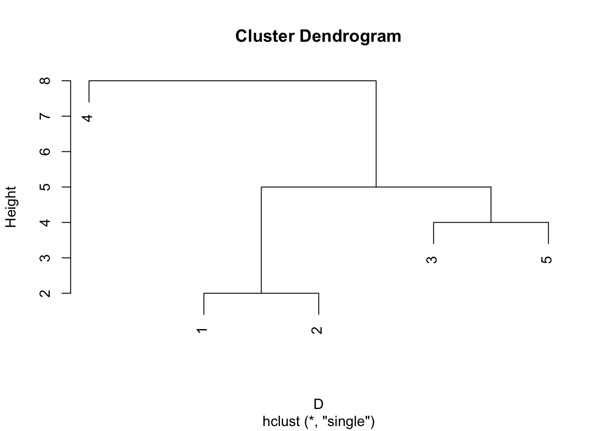

1.2 Hierarchical clustering methods
Hierarchical clustering methods work by creating a hierarchy of clusters, in which clusters at each level of the heirarchy are formed by merging or splitting clusters from a neighbouring level of the hierarchy. A hierarchical clustering method is usually of one of two types:
agglomerative clustering methods start with the finest partition (one observation per cluster) and progressively combine clusters.
divisive/splitting clustering methods start with a single cluster, and then progressively splits or divides clusters.
We will focus on agglomerative methods.
1.2.1 Distance measures
Agglomerative clustering methods take the \(n \times n\) matrix of inter-point distances \(\mathbf D=(d_{ij})_{i,j=1}^n\) of the type we considered in Chapter ??. Sometimes we will have access to the underlying data \(\mathbf x_1, \ldots, \mathbf x_n\) and in that case the distances may be computed using a distance function \(d\), i.e., \(d_{ij}=d(\mathbf x_i, \mathbf x_j)\). As we saw previously, we can find that different distance functions \(d\), can produce different results. For example, with continuous data the Euclidean (\(L_2\)) and Manhattan distance (\(L_1\)) will often produce different results, with the Euclidean distance being more sensitive to outliers than the Manhattan distance:
- the Euclidean distance matrix for the points \(x=0, 1,4\) is \[\begin{pmatrix}0&&\\1&0\\ 16&9&0\end{pmatrix}\] whereas the Manhattan distance matrix is \[\begin{pmatrix}0&&\\1&0\\ 4&3&0\end{pmatrix}.\]
The differences can be even more important for binary attribute data. In Chapter ?? we saw the SMC and Jaccard similarity measures, which leads to a corresponding distance function. For example,
- The Jaccard distance for two sets of attributes \(A\) and \(B\) is \[1- \frac{|A \cap B|}{|A\cup B|}\] i.e., it is number of attributes shared by A and B, divided by the number of attributes possessed by either A or B (or both), all subtracted from 1.
1.2.1.1 Distances between clusters
The distances between individual observations are the input to the clustering method. Each method then defines a distance between clusters. For example, suppose we have two clusters \(\mathcal{G}=\{\mathbf x_1, \mathbf x_2\}\) and \(\mathcal{H}=\{\mathbf x_3, \mathbf x_4\}\). Clustering methods are characterized by how they measure the distance between clusters, \(d(\mathcal{G}, \mathcal{H})\), which is a function of the pairwise distances \(d_{ij}\) where one member of the pair \(i\) is from \(\mathcal{G}\) and the other, \(j\), is from \(\mathcal{H}\).
For example,
single linkage (SL) agglomerative clustering, sometimes called nearest neighbour clustering, uses the closest (least distant) pair \[d_{SL}(\mathcal{G}, \mathcal{H}) = \min_{\substack{i\in \mathcal{G}\\ i\in \mathcal{H}}} d_{ij}\]
complete linkage (CL) agglomerative clustering, sometimes called furthest neigbour clustering, uses \[d_{CL}(\mathcal{G}, \mathcal{H}) = \max_{\substack{i\in \mathcal{G}\\ i\in \mathcal{H}}} d_{ij}\]
group average (GA) clustering uses the average distance between groups: \[d_{GA}(\mathcal{G}, \mathcal{H}) = \frac{1}{n_\mathcal{G}n_\mathcal{H}}\sum_{i\in\mathcal{G}}\sum_{j\in\mathcal{H}} d_{ij}\]
and many other choices are possible (see the help page of the hclust command in R for some details).
Agglomerative clustering methods then work as follows:
Start with the finest partition of singleton clusters (one observation per cluster)
At each stage, join the two clusters with the closest distance.
Stop once we are left with just a single cluster.
1.2.2 Toy Example
Suppose we are given 5 observations with distance matrix
## 1 2 3 4
## 2 2
## 3 11 9
## 4 15 13 10
## 5 7 5 4 8i.e., \(d_{1,2}=2, d_{1,3}=11\) etc.
All methods start with the singleton clusters \(\{1\},\{2\},\{3\},\{4\},\{5\}\).
Single linkage
- at stage 1 we join the pair of clusters that are closest, which is \(\{1\}\) and \(\{2\}\), resulting in the clusters \(\{1\, 2\},\{3\},\{4\},\{5\}\). The (single linkage) distance matrix for these clusteres is then
## 12 3 4
## 3 9
## 4 13 10
## 5 5 4 8- the closest clusters are \(\{3\}\) and \(\{5\}\), and so at stage 2 we get the clusters \(\{1\, 2\},\{3, 5\},\{4\}\), with the distances between clusters now given by
## 12 35
## 35 5
## 4 13 8- at stage 3 we join \(\{1\, 2\}\) and \(\{3, 5\}\) giving the clusters \(\{1\, 2, 3, 5\},\{4\}\), with the distances between clusters now given by
## 1235
## 4 8- at stage 4 we join the final two clusters resulting in the single cluster \(\{1\, 2, 3, 4, 5\}\).
The hclust command does agglomerative clustering: we just have to specify the method to use.
We can use the cutree command to specify a given number of clusters. For example, it we want just two clusters, we can use
## [1] 1 1 1 2 1This tells us that observations 1,2,3, and 5 are all in one cluster, and observation 4 in another cluster.
A convenient graphical way to present the output from an agglomerative clustering method is as a dendrogram. These show the arrangement of the clusters produced at each stage. The height of each node in the plot is proportional to the value of the intergroup distance between its two daughters. The plot command in R automatically produces dendrograms if passed output from the hclust.

An alternatively to cutting the tree according to the number of clusters required, is to specify at which height to cut the tree. For example, if we cut the tree at height \(T=4.5\) we get
## [1] 1 1 2 3 2showing that we have clusters \(\{1,2\}, \{3,5\}, \{4\}\).
Complete linkage
Let’s now consider using complete linkage.
at stage 0 the clsuters are \(\{1\}, \{2\},\{3\},\{4\},\{5\}\)
stage 1 is the same for all methods and we joint the pair of observations that are closest, resulting in clusters \(\{1\, 2\},\{3\},\{4\},\{5\}\). The (complete linkage) distance matrix between clusters is
## 12 3 4
## 3 11
## 4 15 10
## 5 7 4 8which is different to what we found previously.
- at stage 2 we joint together \(\{3\}\) and \(\{5\}\) giving the clusters \(\{1\, 2\},\{3, 5\},\{4\}\), with the distances between clusters given by
## 12 35
## 35 11
## 4 15 10- at stage 3 the clusters are \(\{1\, 2\},\{3, 4, 5\}\), with the distances between clusters given by
## 12
## 345 15- at stage 4 there is a single cluster \(\{1\, 2, 3, 4, 5\}\).
The dendrogram for this is shown below. Note that complete linkage produces a different clustering if we require two clusters.

Group average
Group average clustering produces the same hierarchy of clusters as single linkage, but the nodes (points where clusters join) are at different heights in the dendrogram.

If we were to cut the single linkage and group average dendrograms at a height of 6, then we find different clusters. The single linkage dendrogram cut at height 6 gives the clusters \(\{1,2,3,5\}, \{4\}\) whereas the group average dendrogram gives the clusters \(\{1,2\}, \{3,5\}, \{4\}\), despite the two trees having the same topology.
## [1] 1 1 1 2 1## [1] 1 1 2 3 21.2.3 Comparison of methods
In the case where the distances \(\mathbf D\) clearly split into distinct compact clusters (compact in the sense that all observations within a cluster are relatively close compared to observations in different clusters), all three methods will produce similar results.
In cases where the clustering is less obvious, we may find differences between the methods. Single linkage will join two clusters \(\mathcal{G}\) and \(\mathcal{H}\) if there is a pair of observations \(i\in \mathcal{G}\) and \(j \in \mathcal{H}\) that is small. We therefore get a chaining effect, where observations linked by a chain of close intermediate observations get clustered together. The consequence of this is that the clusters produced can end up not being compact. If we look at the largest distance between members in a cluster, sometimes called the diameter, \[D_\mathcal{G}= \max_{i,j \in \mathcal{G}} d_{ij}\] then the single linkage method can produce clusters with very large diameters.
In constrast, complete linkage is the other extereme. Two clusters are only considered close if all pairs of obsevations are close. Consequently, it tends to produce clusters with small diameters. A downside is that observations assigned to a cluster can be much closer to members of other clusters than they are to some members of their own cluster.
Group averaging is a compromise between these two extremes. It aims to find compact clusters that are relatively far apart. However, the method is not invariant to monotone transformations of the distances, unlike single and complete linkage methods.